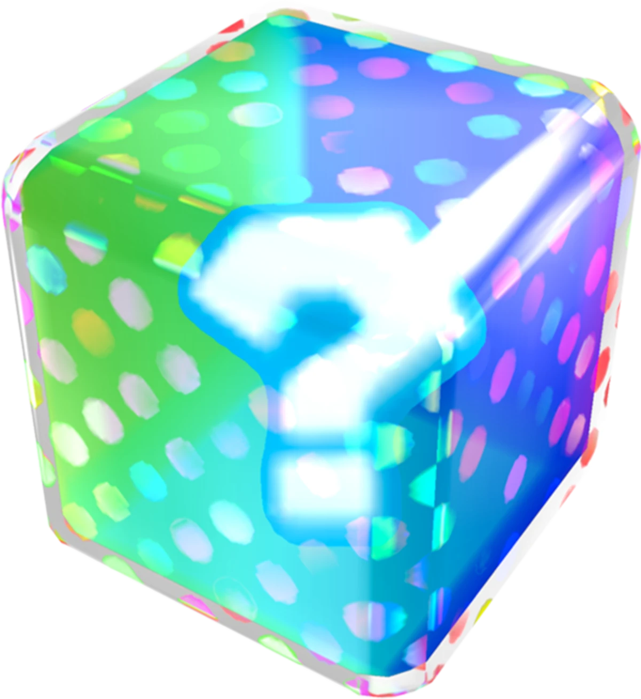
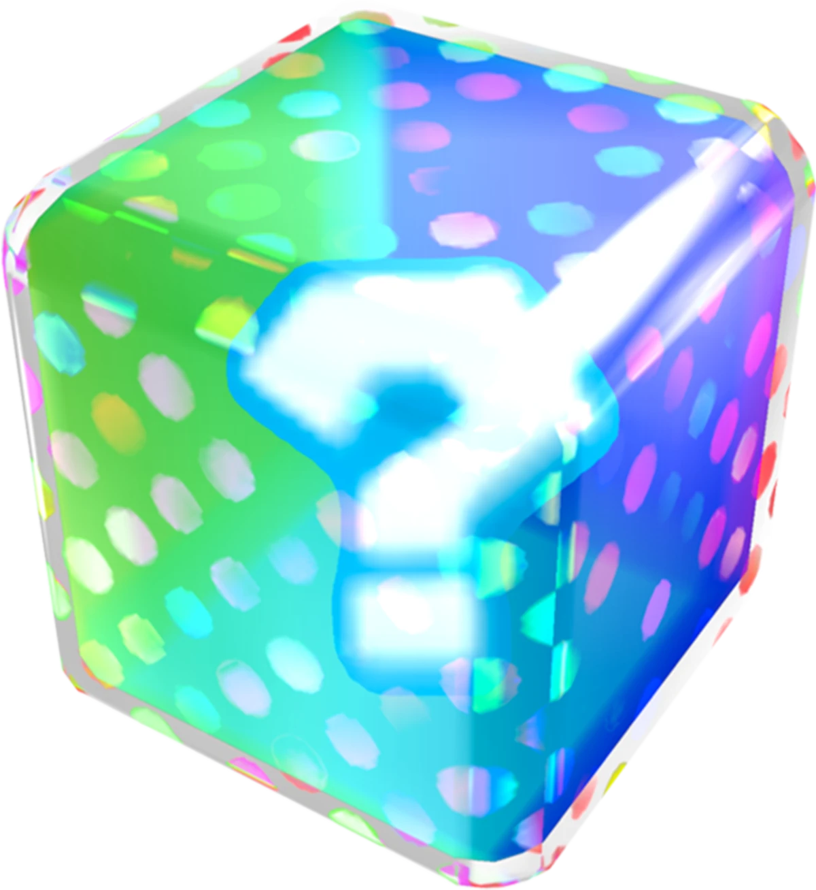

Super Mario Kart was the first game in the Mario Kart series and introduced
the concept of kart racing with power-ups that has since become a staple of the series, and its Mode 7
graphics were revolutionary at the time of release.
First time introduced items
Mushroom
Green Shell
Red shell
Banana
Feather
Star
Ghost
Mario Kart 64 (N64 - 1996)
Mario Kart 64 was the first game in the series to feature fully 3D graphics, and its four-player
split-screen mode allowed for fun local multiplayer races.
First time introduced items
Triple Green Shell
Triple Red Shell
Triple Mushroom
Fake Item Box
Super Star
Thunderbolt
Golden Mushroom
Bowser Shell
Mario Kart Super Circuit (GBA - 2001)
Mario Kart Super Circuit was the first game in the series to feature retro tracks from earlier games in the
series, and its ability to connect with other Game Boy Advance systems for multiplayer was a novelty at the
time.
First time introduced items
Boo
Chain Chomp
Mario Kart Double Dash (Gamecube - 2003)
Mario Kart Double Dash introduced the concept of two characters per kart, with unique special items for each
character, and the ability to switch between them mid-race, making for an interesting new gameplay mechanic.
First time introduced items
Mushroom Car
Fireball
Giant Banana
Birdo Egg
Chain Chomp
Bob-omb
Bullet Bill
Mario Kart DS (Nintendo DS - 2005)
Mario Kart DS was the first game in the series to feature online multiplayer, and it also introduced the
concept of customizable karts and the ability to hold two items at once.
First time introduced items
Blooper
Bob-omb Car
Bullet Bill Car
Shine Sprite
Mario Kart Wii (Wii - 2008)
Mario Kart Wii introduced the Wii Wheel, a plastic steering wheel that players could use with the Wii Remote
to steer their karts, and its motion controls made it a fun and unique experience for players.
First time introduced items
Mega Mushroom
POW Block
Thunder Cloud
Wiggler
Mario Kart 7 (2011 - 3DS)
Mario Kart 7 was the first game in the series to feature kart customization in terms of different body
types, wheels, and gliders, and its new underwater and hang-gliding mechanics added an extra dimension to
the gameplay.
First time introduced items
ire Flower
Lucky 7
Super Leaf
Tanooki Tail
Mario Kart 8 Deluxe (Wii U, Nintendo Switch - 2014/2017)
Mario Kart 8 Deluxe features stunning HD graphics and a new anti-gravity mechanic that allows players to
race on walls and ceilings, and its extensive roster of characters, karts, and tracks make for a huge amount
of replay value.


 
